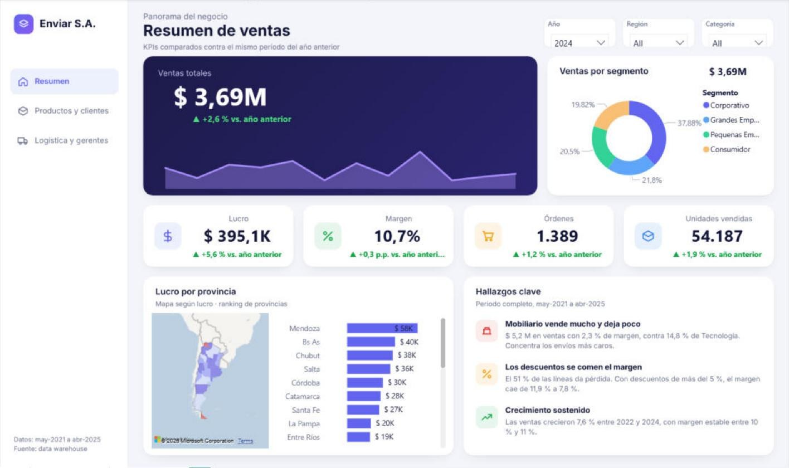

Enviar S.A. — Tablero de ventas en Power BI
Una empresa de distribución necesitaba un solo lugar para seguir ventas, márgenes, costos de envío y el desempeño de sus gerentes provinciales.
Reporte de Power BI de tres páginas sobre un data warehouse en estrella: KPIs contra el año anterior, un mapa de Argentina con el lucro por provincia, rankings de productos y clientes, y costos logísticos.
- Mobiliario factura $5,2 M pero deja solo 2,3 % de margen, contra 14,8 % de Tecnología.
- El 51 % de las líneas de venta da pérdida; con descuentos de más del 5 %, el margen cae de 11,9 % a 7,8 %.
- Las ventas crecieron 7,6 % entre 2022 y 2024, con un margen estable de 10–11 %.




Ver detalle de Enviar S.A.
- Problema
- Enviar S.A. vende tecnología, mobiliario y material de escritorio en todo el país. La gerencia necesitaba seguir las ventas mensuales y acumuladas del año, los productos más vendidos, las formas de envío, los principales clientes por segmento, el margen mensual de cada gerente provincial y los productos con mayor costo de envío.
- Solución
- Un modelo de Power BI sobre el data warehouse en estrella de la empresa (tabla de hechos de ventas y dimensiones de producto, cliente, segmento, provincia, envío, prioridad, embalaje y centro de distribución), con una tabla de calendario agregada. Las medidas DAX cubren comparación interanual, acumulado del año, rankings top 10 y colores condicionales. El reporte está organizado por pregunta de negocio y no por consigna, con un fondo diseñado a medida, navegación lateral, filtros sincronizados y un panel de hallazgos.
- Tecnologías
- Power BI Desktop, DAX (inteligencia de tiempo, RANKX), Power Query, modelado dimensional, formato de proyecto de Power BI (PBIP)
- Estado
- Finalizado — electiva Inteligencia de Negocios, UTN FRBA (2025), rediseñado en 2026.